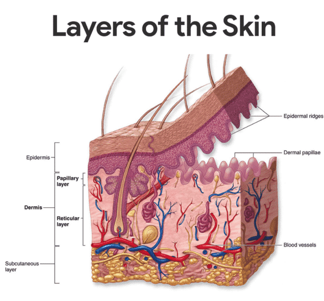
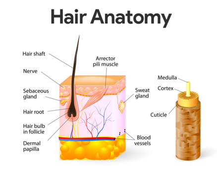
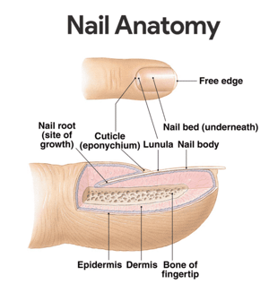

1. Protection. The skin protects deeper tissues from mechanical damage (bumps), chemical damage (acids and bases), ultraviolet radiation (damaging effects of sunlight), bacterial damage, thermal damage (heat or cold), and desiccation (drying out).
2. Temperature regulation. The skin aids in body heat loss or heat retention as controlled by the nervous system.
3. Elimination. The skin aids in the secretion of urea and uric acid through perspiration produced by the sweat glands.
4. Synthesizer. Synthesizes vitamin D through modified cholesterol molecules in the skin by sunlight.
5. Sensation. The integumentary system has sensory receptors that can distinguish heat, cold, touch, pressure, and pain.
Epidermis
The outer epidermis composed of stratified squamous epithelium that is capable of keratinizing or becoming hard and tough.
• Composition. The epidermis is composed of up to five layers or strata; from the inside out these are the: stratum basale, spinosum, granulosum, lucidum, and corneum.
• Epithelial tissue. Like all other epithelial tissues, the epidermis is avascular; that is, it has no blood supply of its own.
• Keratinocytes. Most cells of the epidermis are keratinocytes (keratin cells), which produce keratin, the fibrous protein that makes the epidermis a tough protective layer.
• Stratum basale. The deepest layer of the epidermis, the stratum basale, lies closest to the dermis and is connected to it along a wavy a borderline that resembles corrugated cardboard; this basal layer contains epidermal cells that receive the most adequate nourishment via diffusion of nutrients from the dermis.
• Stratum spinosum. As the epidermal layers move away from the dermis and become part of the more superficial layers, the stratum spinosum.
• Stratum granulosum. Upon reaching the stratum granulosum, the layers become flatter and increasingly full of keratin.
• Stratum lucidum. Finally, they die, forming the clear stratum lucidum; this latter epidermal layer is not present in all skin regions, it occurs only where the skin is hairless and extra thick, that is, on the palms of the hands and soles of the feet.
• Stratum corneum. The outermost layer, the stratum corneum, is 20 to 30 cells layers thick but it accounts for about three-quarters of epidermal thickness; it rubs and flakes off slowly and steadily as the dandruff familiar to everyone; then, this layer is replaced by cells produced by the division of the deeper stratum basale cells.
• Cornified cells. The shinglelike dead cell remnants, completely filled with keratin, are referred to as cornified or horny cells.
• Keratin. Keratin is an exceptionally tough protein; its abundance in the stratum corneum allows that layer to provide a durable “overcoat” for the body, which protects deeper cells from the hostile external environment.
• Melanin. Melanin, a pigment that ranges in color from yellow to brown to black, is produced by special spider-shaped cells called melanocytes, found chiefly in the stratum basale.
• Melanosomes. As the melanocytes produce melanin, it accumulates within them in membrane-bound granules called melanosomes; these granules then move to the ends of the spidery arms of the melanocytes, where they are taken up by nearby keratinocytes.
Dermis
The underlying dermis is mostly made up of dense connective tissue

• Major regions. The dense (fibrous) connective tissue making up the dermis consists of two major regions- the papillary and reticular regions.
• Papillary layer. The papillary layer is the upper dermal region; it is uneven and has peglike projections from its superior surface called dermal papillae, which indent the epidermis above and contain capillary loops which furnish nutrients to the epidermis; it also has papillary patterns that form looped and whorled ridges on the epidermal surface that increase friction and enhance the gripping ability of the fingers and feet.
• Reticular layer. The reticular layer is the deepest skin layer; it contains blood vessels, sweat and oil glands, and deep pressure receptors called Pacinian corpuscles.
• Collagen. Collagen fibers are responsible for the toughness of the dermis; they also attract and bind water and thus help to keep the skin hydrated.
• Elastic fibers. Elastic fibers give the skin its elasticity when we are young, and as we age, the number of collagen and elastic fibers decreases and the subcutaneous tissue loses fat.
• Blood vessels. The dermis is abundantly supplied with blood vessels that play a role in maintaining body temperature homeostasis; when body temperature is high, the capillaries of the dermis becomes engorged, or swollen, with heated blood, and the skin becomes reddened and warm; if the environment is cool, blood bypasses the dermis capillaries temporarily, allowing internal body temperature to stay high.
• Nerve supply. The dermis also has a rich nerve supply; many of the nerve endings have specialized receptor end-organs that send messages to the central nervous system for interpretation when they are stimulated by environmental factors.
Appendages of the Skin
The skin appendages include cutaneous glands, hair and hair follicle, and nails.
Cutaneous Glands
As these glands are formed by the cells of the stratum basale, they push into deeper skin regions and ultimately reside almost entirely in the dermis.
• Exocrine glands. The cutaneous glands are all exocrine glands that release their secretions to the skin surface via ducts and they fall into two groups: sebaceous glands and sweat glands.
• Sebaceous (oil) glands. The sebaceous, or oil, glands are found all over the skin, except on the palms of the hands and the soles of the feet; their ducts usually empty into a hair follicle; the product of the sebaceous glands, sebum, is a mixture of oily substances and fragmented cells, and it is a lubricant that keeps the skin soft and moist and prevents the hair from becoming brittle.
• Sweat glands. Sweat glands, also called sudoriferous glands, are widely distributed in the skin, and there are two types: eccrine and apocrine.
• Eccrine glands. The eccrine glands are far more numerous and are found all over the body; they produce sweat, a clear secretion that is primarily water plus some salts, vitamin C, trace of metabolic wastes, and lactic acid; the eccrine glands are also a part of the body’s heat regulating equipment.
• Apocrine glands. Apocrine glands are largely confined to the axillary and genital areas of the body; they are usually larger than eccrine glands and their ducts empty into hair follicles; their secretion contain fatty acids and proteins, as well as all substances present in eccrine secretion; they begin to function during puberty under the influence of androgens, and they also play a minimal role in thermoregulation.
Hair and Hair Follicles
There are millions of hair scattered all over the body, but other than serving a few minor protective functions, our body hair has lost much of its usefulness.

• Hairs. A hair, produced by a hair follicle, is a flexible epithelial structure.
• Root. The part of the hair enclosed in the follicle is the root.
• Shaft. The part projecting from the surface of the scalp or skin is called shaft.
• Formation. The hair is formed by division of a well-nourished stratum basale epithelial cells in the matrix (growth zone) of the hair bulb at the inferior end of the follicle.
• Composition. Each hair is made up of a central core called the medulla surrounded by a bulky cortex layer.
• Cuticle. The cortex is enclosed by an outermost cuticle formed by a single layer of cells that overlap one another like shingles on the roof; this arrangement helps to keep the hairs apart and keeps them from matting; the cuticle is the most heavily keratinized region; it provides strength and helps keep the inner hair layers tightly compacted.
• Hair pigment. Hair pigment is made by melanocytes in the hair bulb, and varying amounts of different types of melanin combine to produce all varieties of hair color from pale blond to pitch black.
• Hair follicles. Hair follicles are actually compound structures.
• Epidermal sheath. The inner epidermal sheath is composed of epithelial tissue and forms the hair.
• Dermal sheath. The outer dermal sheath is actually dermal connective tissue; this dermal region supplies blood vessels to the epidermal portion and reinforces it.
• Papilla. Its nipplelike papilla provides the blood supply to the matrix in the hair bulb.
• Arrector pili. Small bands of smooth muscle cells -arrector pili- connect each side of the hair follicle to the dermal tissue; when these muscles contract, the hair is pulled upright, dimpling the skin surface with “goosebumps”.
Nails
A nail is a scalelike modification of the epidermis that corresponds to the hoof or claw of other animals.

• Parts. Each nail has a free edge, a body (visible attached portion), and a root (embedded in the skin).
• Nail folds. The borders of the nail are overlapped by skin folds, called nail folds.
• Cuticle. The thick proximal nail fold is commonly called the cuticle.
• Nail bed. The stratum basale of the epidermis extends beneath the nail as the nail bed.
• Nail matrix. Its thickened proximal area, the nail matrix, is responsible for nail growth.
• Color. Nails are transparent and nearly colorless, but they look pink because of the rich blood supply in the underlying dermis.
• Lunula. The exception to the pinkish color of the nails is the region over the thickened nail matrix that appears as a white crescent and is called the lunula.”
Physiology of the Integumentary System
The normal processes that occur in the integumentary system are
Development of Skin Color
Three pigments and even emotions contribute to skin color:
• Melanin. The amount and kind (yellow, reddish brown, or black) of melanin in the epidermis.
• Carotene. The amount of carotene deposited in the stratum corneum and subcutaneous tissue; carotene is an orange-yellow pigment abundant in carrots and other orange, deep yellow, or leafy green vegetables; the skin tends to take on a yellow-orange cast when the person eats large amounts of carotene-rich foods.
• Hemoglobin. The amount of oxygen-rich hemoglobin in the dermal blood vessels.
• Emotions. Emotions also influence skin color, and many alterations in skin color signal certain disease states.
• Redness or erythema. Reddened skin may indicate embarrassment, fever, hypertension, inflammation, or allergy.
• Pallor or blanching. Under certain types of emotional stress, some people become pale; pale skin may also signify anemia, low blood pressure, or impaired blood flow into the area.
• Jaundice or a yellow cast. An abnormal yellow skin tone usually signifies a liver disorder in which excess bile pigments are absorbed into the blood, circulated throughout the body, and deposited in body tissues.
• Bruises or black-and-blue marks. Black-and-blue marks reveal sites where blood has escaped from circulation and has clotted in tissue spaces; such clotted blood masses are called hematomas.
Hair Growth Cycle
At any given time, a random number of hairs will be in one of three stages of growth and shedding: anagen, catagen, and telogen.
• Anagen. Anagen is the active phase of hair; the cells in the root of the hair are dividing rapidly; a new hair is formed and pushes the club hair (a hair that has stopped growing or is no longer in the anagen phase) up the follicle and eventually out.
• Catagen. The catagen phase is a transitional stage; growth stops and the outer root sheath shrinks and attaches to the root of the hair.
• Telogen. Telogen is the resting phase; during this phase, the hair follicle is completely at rest and the club hair is completely formed.
Nail Growth
Nail growth is separated into 3 areas:
(1) germinal matrix
(2) sterile matrix
(3) dorsal roof of the nail fold
• Germinal matrix. It is found on the ventral floor of the nail fold; the nail is produced by gradient parakeratosis , then cells near the periosteum of the phalanx duplicate and enlarge (macrocytosis); newly formed cells migrate distally and dorsally in a column toward the nail; cells meet resistance at established nail, causing them to flatten and elongate as they are incorporated into the nail; it initially retains nuclei (lunula); more distal cells become nonviable and lose nuclei.
• Sterile matrix. The area of the sterile matrix is distal to the lunula and it has a variable amount of nail growth; it contributes squamous cells, aiding in nail strength and thickness and it has a role in nail plate adherence by linear ridges in the sterile matrix epithelium.
• Dorsal roof of the nail fold. The nail is produced in a similar manner as the germinal matrix, but the cells lose nuclei more rapidly and it imparts shine to the nail plate.